Nonlinear Convex Optimization¶
In this chapter we consider nonlinear convex optimization problems of the form

The functions 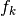 are convex and twice differentiable and the linear inequalities are generalized inequalities with respect to a proper convex cone, defined as a product of a nonnegative orthant, second-order cones, and positive semidefinite cones.
The basic functions are cp and
cpl, described in the sections
Problems with Nonlinear Objectives and Problems with Linear Objectives. A simpler interface for geometric
programming problems is discussed in the section Geometric Programming.
In the section Exploiting Structure we explain how custom solvers can be
implemented that exploit structure in specific classes of problems.
The last section
describes the algorithm parameters that control the solvers.
Problems with Nonlinear Objectives¶
-
cvxopt.solvers.cp(F[, G, h[, dims[, A, b[, kktsolver]]]])¶ Solves a convex optimization problem
(1)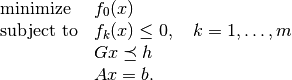
The argument
Fis a function that evaluates the objective and nonlinear constraint functions. It must handle the following calling sequences.F()returns a tuple (m,x0), where is
the number of nonlinear constraints and
is
the number of nonlinear constraints and  is a point in
the domain of
is a point in
the domain of  .
. x0is a dense real matrix of size ( , 1).
, 1).F(x), withxa dense real matrix of size (, 1),
returns a tuple (f,Df).fis a dense real matrix of size ( , 1), with
, 1), with f[k]equal to 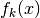. (If is zero, fcan also be returned as a number.)Dfis a dense or sparse real matrix of size ( + 1,
) with Df[k,:]equal to the transpose of the gradient 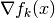. If is not in the domain
of ,
is not in the domain
of , F(x)returnsNoneor a tuple (None,None).F(x,z), withxa dense real matrix of size (, 1)
and za positive dense real matrix of size ( + 1, 1)
returns a tuple (f,Df,H).fandDfare defined as above.His a square dense or sparse real matrix of size (, ), whose lower triangular part contains
the lower triangular part of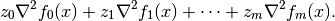
If
Fis called with two arguments, it can be assumed that is in the domain of .
The linear inequalities are with respect to a cone
 defined
as a Cartesian product of a nonnegative orthant, a number of
second-order cones, and a number of positive semidefinite cones:
defined
as a Cartesian product of a nonnegative orthant, a number of
second-order cones, and a number of positive semidefinite cones:
with

Here
 denotes a symmetric matrix
denotes a symmetric matrix  stored as a vector in column major order.
stored as a vector in column major order.The arguments
handbare real single-column dense matrices.GandAare real dense or sparse matrices. The default values forAandbare sparse matrices with zero rows, meaning that there are no equality constraints. The number of rows ofGandhis equal to
The columns of
Gandhare vectors in
where the last
 components represent symmetric matrices stored
in column major order. The strictly upper triangular entries of these
matrices are not accessed (i.e., the symmetric matrices are stored
in the
components represent symmetric matrices stored
in column major order. The strictly upper triangular entries of these
matrices are not accessed (i.e., the symmetric matrices are stored
in the 'L'-type column major order used in theblasandlapackmodules).The argument
dimsis a dictionary with the dimensions of the cones. It has three fields.dims['l']: , the dimension of the nonnegative orthant (a nonnegative
integer).
, the dimension of the nonnegative orthant (a nonnegative
integer).dims['q']:![[r_0, \ldots, r_{M-1}]](_images/math/4a5a1bbcc3881a422d50385a7b28ba2f8b138058.png) , a list with the dimensions of the
second-order cones (positive integers).
, a list with the dimensions of the
second-order cones (positive integers).dims['s']:![[t_0, \ldots, t_{N-1}]](_images/math/7949c78c45dd5977a07f55aab72d3f7d7b991f19.png) , a list with the dimensions of the
positive semidefinite cones (nonnegative integers).
, a list with the dimensions of the
positive semidefinite cones (nonnegative integers).
The default value of
dimsis{'l': h.size[0], 'q': [], 's': []}, i.e., the default assumption is that the linear inequalities are componentwise inequalities.The role of the optional argument
kktsolveris explained in the section Exploiting Structure.cpreturns a dictionary that contains the result and information about the accuracy of the solution. The most important fields have keys'status','x','snl','sl','y','znl','zl'. The possible values of the'status'key are:'optimal'In this case the
'x'entry of the dictionary is the primal optimal solution, the'snl'and'sl'entries are the corresponding slacks in the nonlinear and linear inequality constraints, and the'znl','zl'and'y'entries are the optimal values of the dual variables associated with the nonlinear inequalities, the linear inequalities, and the linear equality constraints. These vectors approximately satisfy the Karush-Kuhn-Tucker (KKT) conditions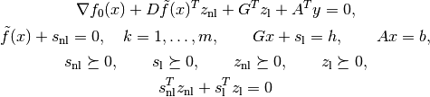
where 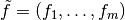.
'unknown'- This indicates that the algorithm terminated before a solution was
found, due to numerical difficulties or because the maximum number
of iterations was reached. The
'x','snl','sl','y','znl', and'zl'entries contain the iterates when the algorithm terminated.
cpsolves the problem by applyingcplto the epigraph form problem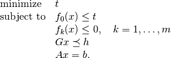
The other entries in the output dictionary of
cpdescribe the accuracy of the solution and are copied from the output ofcplapplied to this epigraph form problem.cprequires that the problem is strictly primal and dual feasible and that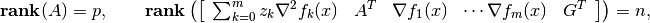
for all
and all positive  .
.
- Example: equality constrained analytic centering
The equality constrained analytic centering problem is defined as
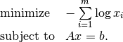
The function
acentdefined below solves the problem, assuming it is solvable.from cvxopt import solvers, matrix, spdiag, log def acent(A, b): m, n = A.size def F(x=None, z=None): if x is None: return 0, matrix(1.0, (n,1)) if min(x) <= 0.0: return None f = -sum(log(x)) Df = -(x**-1).T if z is None: return f, Df H = spdiag(z[0] * x**-2) return f, Df, H return solvers.cp(F, A=A, b=b)['x']
- Example: robust least-squares
The function
roblsdefined below solves the unconstrained problem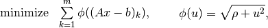
where
 .
.from cvxopt import solvers, matrix, spdiag, sqrt, div def robls(A, b, rho): m, n = A.size def F(x=None, z=None): if x is None: return 0, matrix(0.0, (n,1)) y = A*x-b w = sqrt(rho + y**2) f = sum(w) Df = div(y, w).T * A if z is None: return f, Df H = A.T * spdiag(z[0]*rho*(w**-3)) * A return f, Df, H return solvers.cp(F)['x']
Example: analytic centering with cone constraints
from cvxopt import matrix, log, div, spdiag, solvers def F(x = None, z = None): if x is None: return 0, matrix(0.0, (3,1)) if max(abs(x)) >= 1.0: return None u = 1 - x**2 val = -sum(log(u)) Df = div(2*x, u).T if z is None: return val, Df H = spdiag(2 * z[0] * div(1 + u**2, u**2)) return val, Df, H G = matrix([ [0., -1., 0., 0., -21., -11., 0., -11., 10., 8., 0., 8., 5.], [0., 0., -1., 0., 0., 10., 16., 10., -10., -10., 16., -10., 3.], [0., 0., 0., -1., -5., 2., -17., 2., -6., 8., -17., -7., 6.] ]) h = matrix([1.0, 0.0, 0.0, 0.0, 20., 10., 40., 10., 80., 10., 40., 10., 15.]) dims = {'l': 0, 'q': [4], 's': [3]} sol = solvers.cp(F, G, h, dims) print(sol['x']) [ 4.11e-01] [ 5.59e-01] [-7.20e-01]
![\begin{array}{ll}
\mbox{minimize}
& -\log(1-x_1^2) -\log(1-x_2^2) -\log(1-x_3^2) \\
\mbox{subject to}
& \|x\|_2 \leq 1 \\
& x_1 \left[\begin{array}{rrr}
-21 & -11 & 0 \\ -11 & 10 & 8 \\ 0 & 8 & 5
\end{array}\right] +
x_2 \left[\begin{array}{rrr}
0 & 10 & 16 \\ 10 & -10 & -10 \\ 16 & -10 & 3
\end{array}\right] +
x_3 \left[\begin{array}{rrr}
-5 & 2 & -17 \\ 2 & -6 & 8 \\ -17 & -7 & 6
\end{array}\right]
\preceq \left[\begin{array}{rrr}
20 & 10 & 40 \\ 10 & 80 & 10 \\ 40 & 10 & 15
\end{array}\right].
\end{array}](_images/math/8dd73eec3308cda7fab4013f76bc74e4ead2be0d.png)
Problems with Linear Objectives¶
-
cvxopt.solvers.cpl(c, F[, G, h[, dims[, A, b[, kktsolver]]]])¶ Solves a convex optimization problem with a linear objective
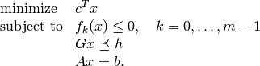
cis a real single-column dense matrix.Fis a function that evaluates the nonlinear constraint functions. It must handle the following calling sequences.F()returns a tuple (m,x0), wheremis the number of nonlinear constraints andx0is a point in the domain of. x0is a dense real matrix of size (, 1).F(x), withxa dense real matrix of size (, 1),
returns a tuple (f,Df).fis a dense real matrix of size (, 1), with f[k]equal to .Dfis a dense or sparse real matrix of size (,
) with Df[k,:]equal to the transpose of the gradient . If is not in the domain
of , F(x)returnsNoneor a tuple (None,None).F(x,z), withxa dense real matrix of size (, 1)
and za positive dense real matrix of size (, 1)
returns a tuple (f,Df,H).fandDfare defined as above.His a square dense or sparse real matrix of size (, ), whose lower triangular part contains the
lower triangular part of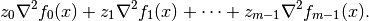
If
Fis called with two arguments, it can be assumed that is in the domain of .
The linear inequalities are with respect to a cone
defined as
a Cartesian product of a nonnegative orthant, a number of second-order
cones, and a number of positive semidefinite cones: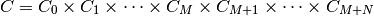
with
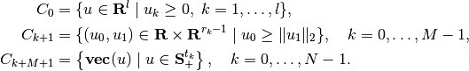
Here
denotes a symmetric matrix
stored as a vector in column major order.The arguments
handbare real single-column dense matrices.GandAare real dense or sparse matrices. The default values forAandbare sparse matrices with zero rows, meaning that there are no equality constraints. The number of rows ofGandhis equal toThe columns of
Gandhare vectors inwhere the last
components represent symmetric matrices stored
in column major order. The strictly upper triangular entries of these
matrices are not accessed (i.e., the symmetric matrices are stored
in the 'L'-type column major order used in theblasandlapackmodules.The argument
dimsis a dictionary with the dimensions of the cones. It has three fields.dims['l']:- , the dimension of the nonnegative orthant (a nonnegative
integer).
dims['q']:- , a list with the dimensions of the
second-order cones (positive integers).
dims['s']:- , a list with the dimensions of the
positive semidefinite cones (nonnegative integers).
The default value of
dimsis{'l': h.size[0], 'q': [], 's': []}, i.e., the default assumption is that the linear inequalities are componentwise inequalities.The role of the optional argument
kktsolveris explained in the section Exploiting Structure.cplreturns a dictionary that contains the result and information about the accuracy of the solution. The most important fields have keys'status','x','snl','sl','y','znl','zl'. The possible values of the'status'key are:'optimal'In this case the
'x'entry of the dictionary is the primal optimal solution, the'snl'and'sl'entries are the corresponding slacks in the nonlinear and linear inequality constraints, and the'znl','zl', and'y'entries are the optimal values of the dual variables associated with the nonlinear inequalities, the linear inequalities, and the linear equality constraints. These vectors approximately satisfy the Karush-Kuhn-Tucker (KKT) conditions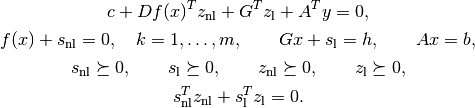
'unknown'- This indicates that the algorithm terminated before a solution was
found, due to numerical difficulties or because the maximum number
of iterations was reached. The
'x','snl','sl','y','znl', and'zl'entries contain the iterates when the algorithm terminated.
The other entries in the output dictionary describe the accuracy of the solution. The entries
'primal objective','dual objective','gap', and'relative gap'give the primal objective , the dual objective, calculated
as
, the dual objective, calculated
as
the duality gap
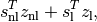
and the relative gap. The relative gap is defined as
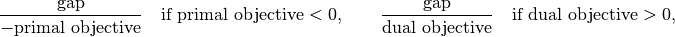
and
Noneotherwise. The entry with key'primal infeasibility'gives the residual in the primal constraints,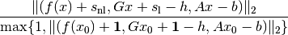
where
is the point returned by F(). The entry with key'dual infeasibility'gives the residual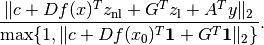
cplrequires that the problem is strictly primal and dual feasible and that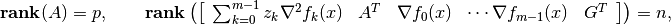
for all
and all positive .
- Example: floor planning
This example is the floor planning problem of section 8.8.2 in the book Convex Optimization:
![\begin{array}{ll}
\mbox{minimize} & W + H \\
\mbox{subject to}
& A_{\mathrm{min}, k}/h_k - w_k \leq 0, \quad k=1,\ldots, 5 \\
& x_1 \geq 0, \quad x_2 \geq 0, \quad x_4 \geq 0 \\
& x_1 + w_1 + \rho \leq x_3, \quad x_2 + w_2 + \rho \leq x_3,
\quad x_3 + w_3 + \rho \leq x_5, \\
& x_4 + w_4 + \rho \leq x_5, \quad x_5 + w_5 \leq W \\
& y_2 \geq 0, \quad y_3 \geq 0, \quad y_5 \geq 0 \\
& y_2 + h_2 + \rho \leq y_1, \quad y_1 + h_1 + \rho \leq y_4,
y_3 + h_3 + \rho \leq y_4, \\
& y_4 + h_4 \leq H, \quad y_5 + h_5 \leq H \\
& h_k/\gamma \leq w_k \leq \gamma h_k, \quad k=1,\ldots,5.
\end{array}](_images/math/375dade287d6d8a7f17747b4bbf7b248b1df901d.png)
This problem has 22 variables
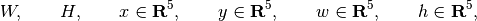
5 nonlinear inequality constraints, and 26 linear inequality constraints. The code belows defines a function
floorplanthat solves the problem by callingcp, then applies it to 4 instances, and creates a figure.import pylab from cvxopt import solvers, matrix, spmatrix, mul, div def floorplan(Amin): # minimize W+H # subject to Amink / hk <= wk, k = 1,..., 5 # x1 >= 0, x2 >= 0, x4 >= 0 # x1 + w1 + rho <= x3 # x2 + w2 + rho <= x3 # x3 + w3 + rho <= x5 # x4 + w4 + rho <= x5 # x5 + w5 <= W # y2 >= 0, y3 >= 0, y5 >= 0 # y2 + h2 + rho <= y1 # y1 + h1 + rho <= y4 # y3 + h3 + rho <= y4 # y4 + h4 <= H # y5 + h5 <= H # hk/gamma <= wk <= gamma*hk, k = 1, ..., 5 # # 22 Variables W, H, x (5), y (5), w (5), h (5). # # W, H: scalars; bounding box width and height # x, y: 5-vectors; coordinates of bottom left corners of blocks # w, h: 5-vectors; widths and heigths of the 5 blocks rho, gamma = 1.0, 5.0 # min spacing, min aspect ratio # The objective is to minimize W + H. There are five nonlinear # constraints # # -wk + Amink / hk <= 0, k = 1, ..., 5 c = matrix(2*[1.0] + 20*[0.0]) def F(x=None, z=None): if x is None: return 5, matrix(17*[0.0] + 5*[1.0]) if min(x[17:]) <= 0.0: return None f = -x[12:17] + div(Amin, x[17:]) Df = matrix(0.0, (5,22)) Df[:,12:17] = spmatrix(-1.0, range(5), range(5)) Df[:,17:] = spmatrix(-div(Amin, x[17:]**2), range(5), range(5)) if z is None: return f, Df H = spmatrix( 2.0* mul(z, div(Amin, x[17::]**3)), range(17,22), range(17,22) ) return f, Df, H G = matrix(0.0, (26,22)) h = matrix(0.0, (26,1)) G[0,2] = -1.0 # -x1 <= 0 G[1,3] = -1.0 # -x2 <= 0 G[2,5] = -1.0 # -x4 <= 0 G[3, [2, 4, 12]], h[3] = [1.0, -1.0, 1.0], -rho # x1 - x3 + w1 <= -rho G[4, [3, 4, 13]], h[4] = [1.0, -1.0, 1.0], -rho # x2 - x3 + w2 <= -rho G[5, [4, 6, 14]], h[5] = [1.0, -1.0, 1.0], -rho # x3 - x5 + w3 <= -rho G[6, [5, 6, 15]], h[6] = [1.0, -1.0, 1.0], -rho # x4 - x5 + w4 <= -rho G[7, [0, 6, 16]] = -1.0, 1.0, 1.0 # -W + x5 + w5 <= 0 G[8,8] = -1.0 # -y2 <= 0 G[9,9] = -1.0 # -y3 <= 0 G[10,11] = -1.0 # -y5 <= 0 G[11, [7, 8, 18]], h[11] = [-1.0, 1.0, 1.0], -rho # -y1 + y2 + h2 <= -rho G[12, [7, 10, 17]], h[12] = [1.0, -1.0, 1.0], -rho # y1 - y4 + h1 <= -rho G[13, [9, 10, 19]], h[13] = [1.0, -1.0, 1.0], -rho # y3 - y4 + h3 <= -rho G[14, [1, 10, 20]] = -1.0, 1.0, 1.0 # -H + y4 + h4 <= 0 G[15, [1, 11, 21]] = -1.0, 1.0, 1.0 # -H + y5 + h5 <= 0 G[16, [12, 17]] = -1.0, 1.0/gamma # -w1 + h1/gamma <= 0 G[17, [12, 17]] = 1.0, -gamma # w1 - gamma * h1 <= 0 G[18, [13, 18]] = -1.0, 1.0/gamma # -w2 + h2/gamma <= 0 G[19, [13, 18]] = 1.0, -gamma # w2 - gamma * h2 <= 0 G[20, [14, 18]] = -1.0, 1.0/gamma # -w3 + h3/gamma <= 0 G[21, [14, 19]] = 1.0, -gamma # w3 - gamma * h3 <= 0 G[22, [15, 19]] = -1.0, 1.0/gamma # -w4 + h4/gamma <= 0 G[23, [15, 20]] = 1.0, -gamma # w4 - gamma * h4 <= 0 G[24, [16, 21]] = -1.0, 1.0/gamma # -w5 + h5/gamma <= 0 G[25, [16, 21]] = 1.0, -gamma # w5 - gamma * h5 <= 0.0 # solve and return W, H, x, y, w, h sol = solvers.cpl(c, F, G, h) return sol['x'][0], sol['x'][1], sol['x'][2:7], sol['x'][7:12], sol['x'][12:17], sol['x'][17:] pylab.figure(facecolor='w') pylab.subplot(221) Amin = matrix([100., 100., 100., 100., 100.]) W, H, x, y, w, h = floorplan(Amin) for k in range(5): pylab.fill([x[k], x[k], x[k]+w[k], x[k]+w[k]], [y[k], y[k]+h[k], y[k]+h[k], y[k]], facecolor = '#D0D0D0') pylab.text(x[k]+.5*w[k], y[k]+.5*h[k], "%d" %(k+1)) pylab.axis([-1.0, 26, -1.0, 26]) pylab.xticks([]) pylab.yticks([]) pylab.subplot(222) Amin = matrix([20., 50., 80., 150., 200.]) W, H, x, y, w, h = floorplan(Amin) for k in range(5): pylab.fill([x[k], x[k], x[k]+w[k], x[k]+w[k]], [y[k], y[k]+h[k], y[k]+h[k], y[k]], 'facecolor = #D0D0D0') pylab.text(x[k]+.5*w[k], y[k]+.5*h[k], "%d" %(k+1)) pylab.axis([-1.0, 26, -1.0, 26]) pylab.xticks([]) pylab.yticks([]) pylab.subplot(223) Amin = matrix([180., 80., 80., 80., 80.]) W, H, x, y, w, h = floorplan(Amin) for k in range(5): pylab.fill([x[k], x[k], x[k]+w[k], x[k]+w[k]], [y[k], y[k]+h[k], y[k]+h[k], y[k]], 'facecolor = #D0D0D0') pylab.text(x[k]+.5*w[k], y[k]+.5*h[k], "%d" %(k+1)) pylab.axis([-1.0, 26, -1.0, 26]) pylab.xticks([]) pylab.yticks([]) pylab.subplot(224) Amin = matrix([20., 150., 20., 200., 110.]) W, H, x, y, w, h = floorplan(Amin) for k in range(5): pylab.fill([x[k], x[k], x[k]+w[k], x[k]+w[k]], [y[k], y[k]+h[k], y[k]+h[k], y[k]], 'facecolor = #D0D0D0') pylab.text(x[k]+.5*w[k], y[k]+.5*h[k], "%d" %(k+1)) pylab.axis([-1.0, 26, -1.0, 26]) pylab.xticks([]) pylab.yticks([]) pylab.show()

Geometric Programming¶
-
cvxopt.solvers.gp(K, F, g[, G, h[, A, b]])¶ Solves a geometric program in convex form

where
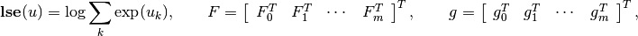
and the vector inequality denotes componentwise inequality.
Kis a list of + 1 positive integers with K[i]equal to the number of rows in 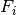.Fis a dense or sparse real matrix of size(sum(K), n).gis a dense real matrix with one column and the same number of rows asF.GandAare dense or sparse real matrices. Their default values are sparse matrices with zero rows.handbare dense real matrices with one column. Their default values are matrices of size (0, 1).gpreturns a dictionary with keys'status','x','snl','sl','y','znl', and'zl'. The possible values of the'status'key are:'optimal'In this case the
'x'entry is the primal optimal solution, the'snl'and'sl'entries are the corresponding slacks in the nonlinear and linear inequality constraints. The'znl','zl', and'y'entries are the optimal values of the dual variables associated with the nonlinear and linear inequality constraints and the linear equality constraints. These values approximately satisfy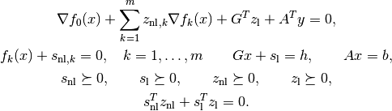
'unknown'- This indicates that the algorithm terminated before a solution was
found, due to numerical difficulties or because the maximum number
of iterations was reached. The
'x','snl','sl','y','znl', and'zl'contain the iterates when the algorithm terminated.
The other entries in the output dictionary describe the accuracy of the solution, and are taken from the output of
cp.
As an example, we solve the small GP of section 2.4 of the paper A Tutorial on Geometric Programming. The posynomial form of the problem is
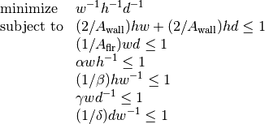
with variables 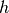,  ,
,  .
.
from cvxopt import matrix, log, exp, solvers
Aflr = 1000.0
Awall = 100.0
alpha = 0.5
beta = 2.0
gamma = 0.5
delta = 2.0
F = matrix( [[-1., 1., 1., 0., -1., 1., 0., 0.],
[-1., 1., 0., 1., 1., -1., 1., -1.],
[-1., 0., 1., 1., 0., 0., -1., 1.]])
g = log( matrix( [1.0, 2/Awall, 2/Awall, 1/Aflr, alpha, 1/beta, gamma, 1/delta]) )
K = [1, 2, 1, 1, 1, 1, 1]
h, w, d = exp( solvers.gp(K, F, g)['x'] )
Exploiting Structure¶
By default, the functions cp and
cpl do not exploit problem
structure. Two mechanisms are provided for implementing customized solvers
that take advantage of problem structure.
- Providing a function for solving KKT equations
The most expensive step of each iteration of
cpis the solution of a set of linear equations (KKT equations) of the form(2)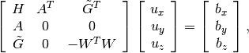
where
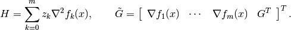
The matrix
 depends on the current iterates and is defined as
follows. Suppose
depends on the current iterates and is defined as
follows. Suppose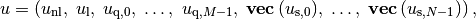
where
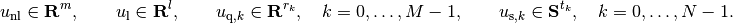
Then
is a block-diagonal matrix,
with the following diagonal blocks.
The first block is a positive diagonal scaling with a vector
 :
: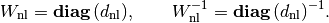
This transformation is symmetric:
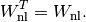
The second block is a positive diagonal scaling with a vector 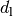:
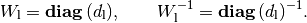
This transformation is symmetric:

The next
 blocks are positive multiples of hyperbolic
Householder transformations:
blocks are positive multiples of hyperbolic
Householder transformations:
where
![\beta_k > 0, \qquad v_{k0} > 0, \qquad v_k^T Jv_k = 1, \qquad
J = \left[\begin{array}{cc} 1 & 0 \\ 0 & -I \end{array}\right].](_images/math/0246a989dbd0daa3dc3c6fecbf683b226a79b7f1.png)
These transformations are also symmetric:

The last
blocks are congruence transformations with
nonsingular matrices: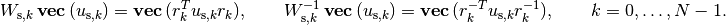
In general, this operation is not symmetric, and
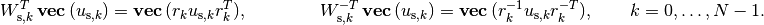
It is often possible to exploit problem structure to solve (2) faster than by standard methods. The last argument
kktsolverofcpallows the user to supply a Python function for solving the KKT equations. This function will be called asf = kktsolver(x, z, W). The argumentxis the point at which the derivatives in the KKT matrix are evaluated.zis a positive vector of length it + 1, containing the coefficients
in the 1,1 block 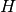. Wis a dictionary that contains the parameters of the scaling:W['dnl']is the positive vector that defines the diagonal scaling for the nonlinear inequalities.W['dnli']is its componentwise inverse.W['d']is the positive vector that defines the diagonal scaling for the componentwise linear inequalities.W['di']is its componentwise inverse.W['beta']andW['v']are lists of length
with the coefficients and vectors that define the hyperbolic
Householder transformations.W['r']is a list of length with the matrices that
define the the congruence transformations. W['rti']is a list of length with the transposes of the inverses of the
matrices in W['r'].
The function call
f = kktsolver(x, z, W)should return a routine for solving the KKT system (2) defined byx,z,W. It will be called asf(bx, by, bz). On entry,bx,by,bzcontain the right-hand side. On exit, they should contain the solution of the KKT system, with the last component scaled, i.e., on exit,
The role of the argument
kktsolverin the functioncplis similar, except that in (2),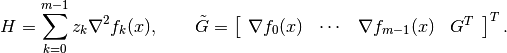
- Specifying constraints via Python functions
In the default use of
cp, the argumentsGandAare the coefficient matrices in the constraints of (2). It is also possible to specify these matrices by providing Python functions that evaluate the corresponding matrix-vector products and their adjoints.If the argument
Gofcpis a Python function, thenG(u, v[, alpha = 1.0, beta = 0.0, trans = 'N'])should evaluates the matrix-vector products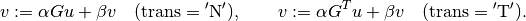
Similarly, if the argument
Ais a Python function, thenA(u, v[, alpha = 1.0, beta = 0.0, trans = 'N'])should evaluate the matrix-vector products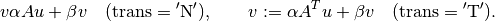
In a similar way, when the first argument
Fofcpreturns matrices of first derivatives or second derivativesDf,H, these matrices can be specified as Python functions. IfDfis a Python function, thenDf(u, v[, alpha = 1.0, beta = 0.0, trans = 'N'])should evaluate the matrix-vector products
If
His a Python function, thenH(u, v[, alpha, beta])should evaluate the matrix-vector product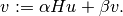
If
G,A,Df, orHare Python functions, then the argumentkktsolvermust also be provided.
As an example, we consider the unconstrained problem
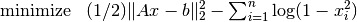
where  is an by matrix with less
than . The Hessian of the objective is diagonal plus a low-rank
term:
is an by matrix with less
than . The Hessian of the objective is diagonal plus a low-rank
term:
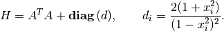
We can exploit this property when solving (2) by applying the matrix inversion lemma. We first solve
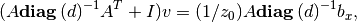
and then obtain

The following code follows this method. It also uses BLAS functions for matrix-matrix and matrix-vector products.
from cvxopt import matrix, spdiag, mul, div, log, blas, lapack, solvers, base
def l2ac(A, b):
"""
Solves
minimize (1/2) * ||A*x-b||_2^2 - sum log (1-xi^2)
assuming A is m x n with m << n.
"""
m, n = A.size
def F(x = None, z = None):
if x is None:
return 0, matrix(0.0, (n,1))
if max(abs(x)) >= 1.0:
return None
# r = A*x - b
r = -b
blas.gemv(A, x, r, beta = -1.0)
w = x**2
f = 0.5 * blas.nrm2(r)**2 - sum(log(1-w))
# gradf = A'*r + 2.0 * x ./ (1-w)
gradf = div(x, 1.0 - w)
blas.gemv(A, r, gradf, trans = 'T', beta = 2.0)
if z is None:
return f, gradf.T
else:
def Hf(u, v, alpha = 1.0, beta = 0.0):
# v := alpha * (A'*A*u + 2*((1+w)./(1-w)).*u + beta *v
v *= beta
v += 2.0 * alpha * mul(div(1.0+w, (1.0-w)**2), u)
blas.gemv(A, u, r)
blas.gemv(A, r, v, alpha = alpha, beta = 1.0, trans = 'T')
return f, gradf.T, Hf
# Custom solver for the Newton system
#
# z[0]*(A'*A + D)*x = bx
#
# where D = 2 * (1+x.^2) ./ (1-x.^2).^2. We apply the matrix inversion
# lemma and solve this as
#
# (A * D^-1 *A' + I) * v = A * D^-1 * bx / z[0]
# D * x = bx / z[0] - A'*v.
S = matrix(0.0, (m,m))
v = matrix(0.0, (m,1))
def Fkkt(x, z, W):
ds = (2.0 * div(1 + x**2, (1 - x**2)**2))**-0.5
Asc = spdiag(ds) * A
blas.syrk(Asc, S)
S[::m+1] += 1.0
lapack.potrf(S)
a = z[0]
def g(x, y, z):
x[:] = mul(x, ds) / a
blas.gemv(Asc, x, v)
lapack.potrs(S, v)
blas.gemv(Asc, v, x, alpha = -1.0, beta = 1.0, trans = 'T')
x[:] = mul(x, ds)
return g
return solvers.cp(F, kktsolver = Fkkt)['x']
Algorithm Parameters¶
The following algorithm control parameters are accessible via the
dictionary solvers.options. By default the dictionary
is empty and the default values of the parameters are used.
One can change the parameters in the default solvers by adding entries with the following key values.
'show_progress'TrueorFalse; turns the output to the screen on or off (default:True).'maxiters'- maximum number of iterations (default:
100). 'abstol'- absolute accuracy (default:
1e-7). 'reltol'- relative accuracy (default:
1e-6). 'feastol'- tolerance for feasibility conditions (default:
1e-7). 'refinement'- number of iterative refinement steps when solving KKT equations
(default:
1).
For example the command
>>> from cvxopt import solvers
>>> solvers.options['show_progress'] = False
turns off the screen output during calls to the solvers. The tolerances
abstol, reltol and feastol have the
following meaning in cpl.
cpl returns with status 'optimal' if

where is the point returned by F(), and
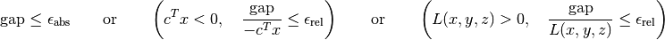
where
![\mathrm{gap} =
\left[\begin{array}{c} s_\mathrm{nl} \\ s_\mathrm{l}
\end{array}\right]^T
\left[\begin{array}{c} z_\mathrm{nl} \\ z_\mathrm{l}
\end{array}\right],
\qquad
L(x,y,z) = c^Tx + z_\mathrm{nl}^T f(x) +
z_\mathrm{l}^T (Gx-h) + y^T(Ax-b).](_images/math/e9424ef951bc888bb64400220e3db2751194bf8e.png)
The functions cp and
gp call cpl and hence use the
same stopping criteria (with  for
for gp).